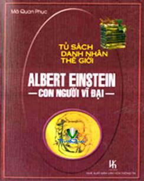

« Back
Albert Einstein Con Người Vĩ Đại
By Nhiều Tác Giả

Albert Einstein (1879 - 1955)Vĩ Nhân Thứ Tám
1- Thời Niên Thiếu.
2- Lúc Trưởng Thành.
3- Thời Kỳ Khảo Cứu Khoa Học.
4- Hoạt Động Chính Trị.
5- Cuộc Sống Tại Hoa Kỳ.
Bảng Đen Cuối Cùng
Albert Einsteinnhà Bác Học Đam Mê Và Chân Thật
Lời Mở Đầu
Trích Một Đoạn Văn
Kết Luận
Thuyết Tương Ðối
Thuyết Tương Đối Thu Hẹp Và Tổng Quát Của Einstein
Sự Co Rút Thời Gian
Sách Báo Viết Về Einstein
Einstein Bông Đùa Như Thế Nào?
Bí Ẩn Thiên Tài Của Einstein
Einstein Thử Nghiệm Thuyết Tương Đối Như Thế Nào?
Einstein Và Thuyết Tương Ðối
II THUYẾT TƯƠNG ÐỐI HẸP(SPECIAL RELATIVITY)
III. TÍNH ÐỒNG BỘ(SYNCHRONIZATION)
IV. ÐỘ DÀI TRONG HỆ QUI CHIẾU CHUYỂN ÐỘNG
V. PHÉP BIẾN ÐỔI LORENTZ(LORENTZ TRANSFORMATION)
Thuyết Tương Đối Thu Hẹp Và Tổng Quát Của Einstein
II) Thuyết Tương Đối Tổng Quát
Sự Co Rút Thời Gian
Sách Báo Viết Về Einstein
Einstein Bông Đùa Như Thế Nào?
Bí Ẩn Thiên Tài Của Einstein
Einstein Thử Nghiệm Thuyết Tương Đối Như Thế Nào?
Einstein Và Thuyết Tương Ðối